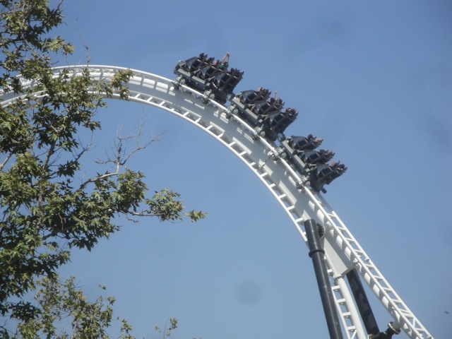
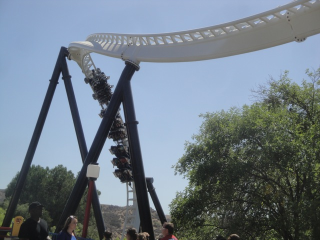
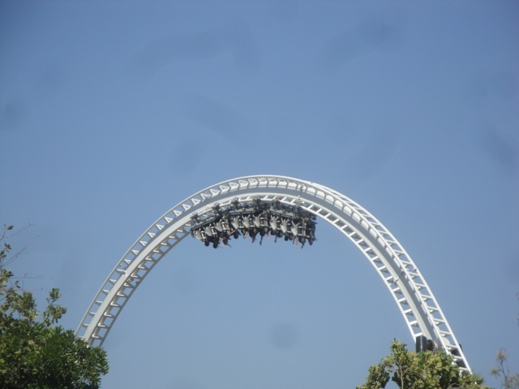
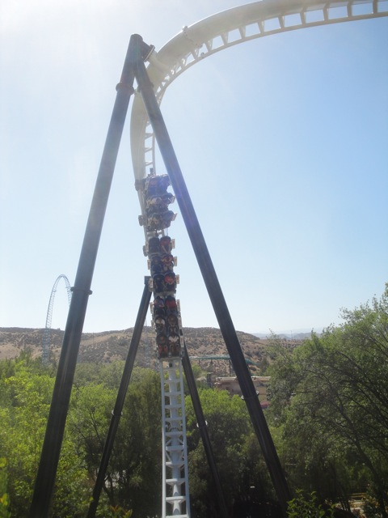
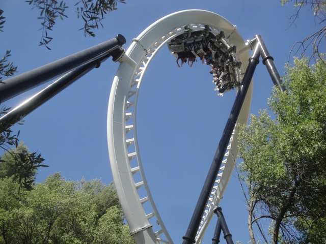

All right. Now unless you've been living underneath a rock, Full Throttle opened up at Six Flags Magic Mountain. And just about everyone's been going ape-sh*t over it. Now while we're doing our typical big SFMM Summer update in September, I didn't want to wait till then to talk about Full Throttle, so I made this update exclusively about Full Throttle's opening.
With all the procastination in construction, I never thought I'd ever see this sight. =)
And yeah. The line for Full Throttle on opening day is absolutely INSANE!!!!
And not only did SFMM just open up Full Throttle, but they also opened up the new Full Throttle Area.
Hey, I have no problems with SFMM adding more Freestyle Coke Machines. =)
So glad I didn't have to wait in that horrible line.
Dammit!!! Why did the Sky Tower have to be closed today!!!? I wanted to go up and get some ariel shots of Full Throttle!!!
Speaking of Full Throttle shots, check out our raw footage video of Full Throttle.

Ok. I know you've all been asking this question. Just how is Full Throttle?

It's very fun. Nothing really amazing or spectacular about the ride. But its fun.
WEE!!!!! =)
Aside from fun, the other best way for me to describe Full Throttle is that its floaty. Its very very floaty.

You get so much hang time in the loop. So if you're a fan of hang time, you're probably going to love Full Throttle.

While Full Throttle is a very unique ride as there's nothing else quite like it, the closest similarities I can come up with is that its very much like Hydra and Raptor @ Gardaland as its very floaty, much like these rides and has the same kind of pacing as these rides.
Oh, and that Backwards Launch that I originally was going to be totally stupid and pointless, I actually enjoyed it. I take back my criticism of it.

So yeah. That's our Full Throttle Update. Its short, but it should give you a good idea of our thoughts on Full Throttle. Its no X2 and doesn't come anywhere near close to cracking my Top 10 List. But its a fun ride and I'd recommend you give it a ride while at Six Flags Magic Mountain (at least once all the hype and the bigass line dies down, you should).